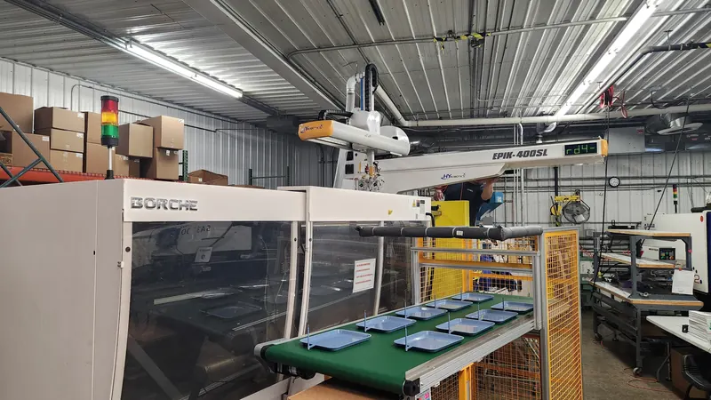

01 / Define
Start with the application.
Document the processing method, expected use, quantity and delivery requirements.
About Precision Polymers
A fictional polymer company portfolio exploring the connection between material requirements and manufacturing decisions.

Materials / People / Process
The sample offering spans commodity resins, engineering polymers, and films & packaging materials.
Our illustrative mission is to make it easier for procurement teams to explore materials, communicate specifications, and begin a clear material conversation.
Precision Polymers is a fictional business created for a portfolio demonstration. No real facilities, customers, certifications or commercial results are claimed.
Explore the catalogue →An illustrative approach
01 / Define
Document the processing method, expected use, quantity and delivery requirements.
02 / Review
Compare specifications and request verified grade documentation from a qualified supplier.
03 / Discuss
Use a material reference and clear requirements to support the next conversation.